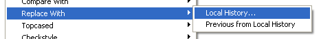
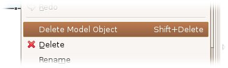
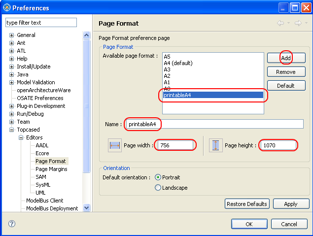
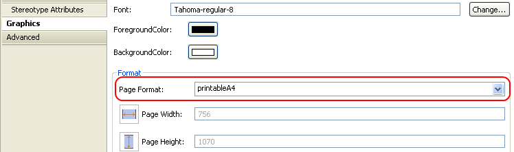

Here is the FAQ page of the Modeling Framework.
- My model is corrupted. How can I retrieve my last valid model ?
- Using Eclipse Local History mechanism, you can easily retrieving a previous version of your model in case the model is corrupted on saving.
Take care to restore both the domain model and the diagrams one.

- Organisation of the files needed to edit a diagram.
- When you create a new diagram with Topcased, there are two files that are created :
- the model file (with *.model extension) that contains informations that are only relative to the model (the model object, its properties and references to other model objects mainly) according to the metamodel.
- the diagram file (with *.modeldi extension) that contains only graphical informations (position, size, color, ...) about elements that are displayed in the diagram.
The link between these two files is implicitly made in the diagram file. Indeed, each graphical element is eventually linked with an object of the model.
- Difference between "Delete From Diagram" and "Delete From Model".
-
- The Delete From Diagram action is used to delete a graphical representation only. The model is not changed.
- The Delete From Model action is used to remove the model object associated with the graphical representation and all its graphical occurences in the available diagrams.

- How to print my diagram in a single page ?
-
- Define your own "printableA4" format : in the Preferences, create a new format using the following values. Note that depending on your printer type you might need to specify smaller values.

- Apply this format to your diagram : select first the diagram, and then in the Properties View, you can change the format in the Graphics tab.
